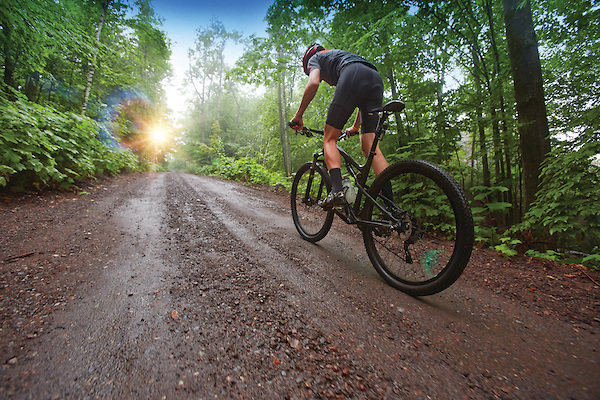
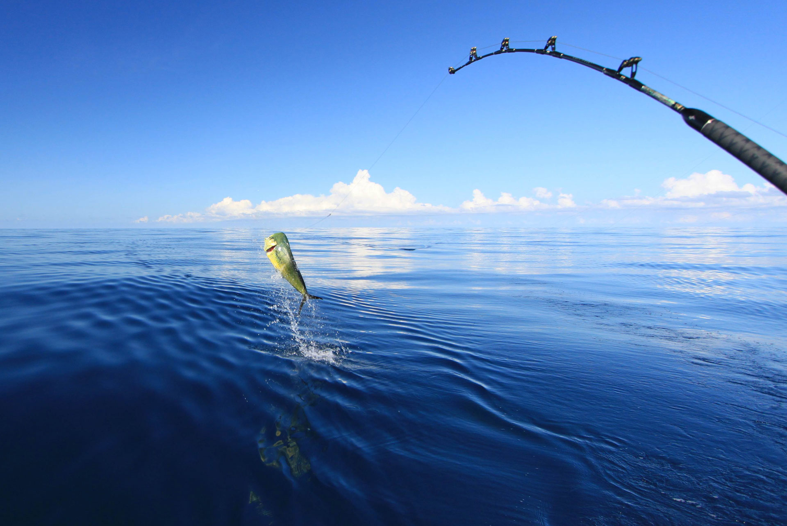
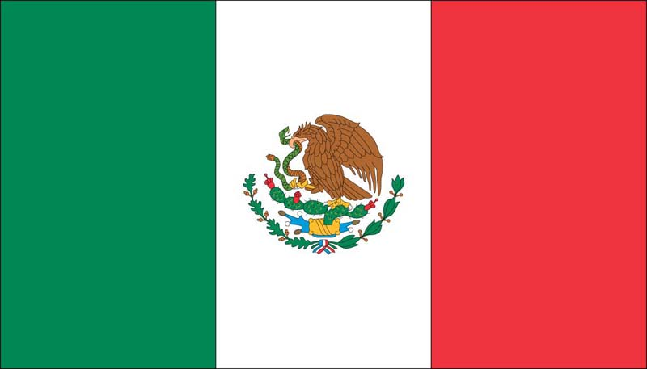

Biking is one of my favorite activities, while I love biking in the city, I prefer biking in the wilderness, it helps me clear my mind.

I love the ocean and the taste of fish, so when I go deep sea fishing I have the time of my life. Growing up in Mexico City, I played soccer all the time, it is my favorite sport to play, and my favorite sport to watch. I love the winter and mountains, skiing in Maryland is one of my first memories as a child and I will always regard it as one of the best times of my l

While I was born in Short Hills NJ and I have no Mexican blood, I spent my entire upbringing in Mexico City, and it has left a permanent mark on my life.